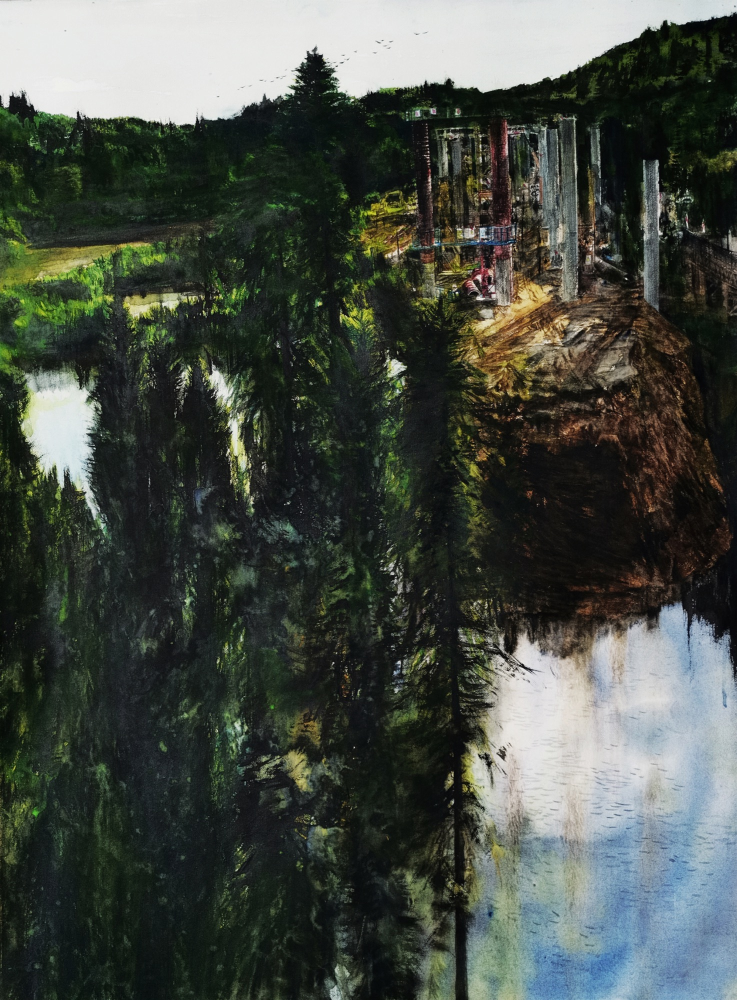

A New Passage Through the Yao Mountains
深山瑶乡辟通途

- Artwork ID / 作品编号
- KW-W-000033
- Year / 年份
- 2024
- Medium / 媒介
- Watercolor on paper / 纸本水彩
- Dimensions / 尺寸
- 132 × 102 cm (H × W / 高 × 宽)
About the work / 作品介绍
Inspired by field research in Yongning Town, Yangchun, Guangdong, this work depicts a highway under construction winding through the Yao mountain region. The towering trees symbolize both the natural landscape and the challenges of engineering in remote terrain, while the bridge piers and roadway represent new connections between the mountains and the outside world. Through the coexistence of nature and infrastructure, the painting reflects the transformation of an isolated community into one connected by modern transportation.
《深山瑶乡辟通途》源于广东省阳春市永宁镇的采风经历。创作时高速公路仍处于建设阶段，盘山道路蜿蜒曲折，深山林海层层展开。画面中夸张挺拔的林木既提炼自当地自然景观，也象征建设过程中所面对的重重阻隔；建设中的桥墩与道路则成为连接山乡与外界的时代印记。作品通过自然与建设的并置，呈现深山瑶乡由闭塞走向通达的发展历程，表达对新时代交通建设成就的礼赞。